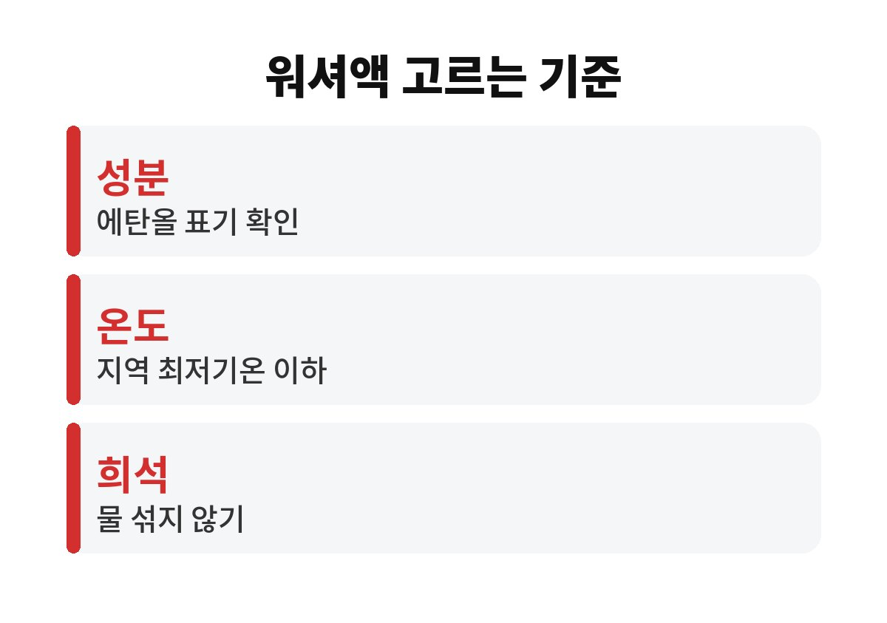
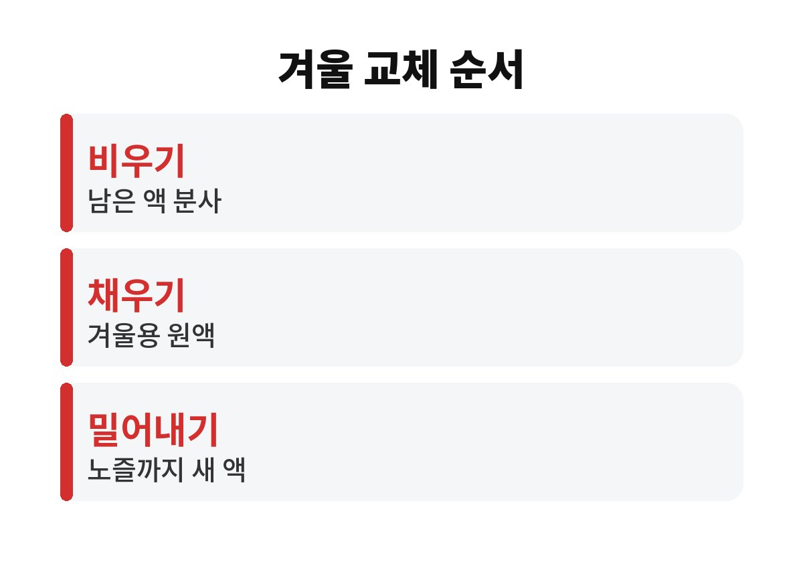

겨울 워셔액이 얼어 나오지 않는 이유는 대부분 여름에 넣은 워셔액이나 물이 탱크와 호스에 남아 있기 때문이고, 영하가 오기 전에 겨울용으로 바꾸면서 노즐 속까지 밀어내면 해결된다.
새 제품을 고를 때는 성분표에 메탄올이 아니라 에탄올이 적혀 있는지부터 본다.
메탄올 함유 워셔액은 2018년부터 판매가 금지됐지만 창고에 오래된 통이 남아 있는 집이 의외로 많다.
밤사이 기온이 영하로 떨어진 날 앞차가 튀긴 흙탕물이 유리에 붙은 상황을 떠올려 본다.
워셔 레버를 당겨도 모터 소리만 나고 액이 나오지 않는다.
와이퍼만 움직이니 마른 흙이 유리 위에 반원 모양으로 번져 앞이 더 안 보인다.
이 상황은 겨울 워셔액을 미리 바꾸지 않은 차에서 가장 흔하게 생긴다.
모터가 헛도는 소리가 길게 나면 바로 레버에서 손을 뗀다.
언 상태로 계속 작동시키면 워셔 모터에 부담이 간다.
여름용 워셔액은 세정 성분 위주라 어는점이 물과 크게 다르지 않다.
겨울용을 부어도 탱크에 남은 여름용이나 물과 섞이면 어는점이 올라간다.
원액에 물을 타서 양을 늘리는 습관도 같은 결과를 만든다.
탱크만 새 액으로 채우면 호스와 노즐 안에는 예전 액이 그대로 있다.
가장 먼저 어는 곳이 바로 이 가느다란 노즐 끝이다.
액이 나와도 유리에 줄무늬가 남거나 와이퍼가 떨리면 고무가 굳었거나 날이 상한 경우가 많다.
추위에 고무가 딱딱해지면서 여름에는 없던 증상이 겨울에 드러난다.
겨울 워셔액을 새로 넣었는데도 이런 줄이 남는다면 액보다 와이퍼 쪽을 먼저 의심한다.
유리에 붙은 유막이 원인일 때도 있어 유막 제거 후 다시 확인해 보면 구분이 된다.
환경부는 위해우려제품 안전기준으로 자동차용 워셔액의 메탄올 함량을 0.6% 이하로 제한했고, 이 기준은 2018년부터 적용됐다.
메탄올은 증기를 들이마시면 시신경 손상 같은 피해를 줄 수 있어 차 안으로 들어오는 워셔액에 쓰지 못하게 한 것이다.
| 확인 항목 | 보는 곳 | 기준 |
|---|---|---|
| 주성분 | 제품 뒷면 성분표 | 에탄올 표기, 메탄올 표기 제품은 쓰지 않음 |
| 사용 가능 온도 | 라벨의 어는점·사용 온도 | 사는 지역 최저기온보다 낮은 것 |
| 희석 여부 | 사용 방법 안내 | 원액 사용 제품에 물을 섞지 않음 |
| 와이퍼 상태 | 유리에 남는 줄무늬·떨림 | 증상이 있으면 블레이드 교체 |
강원 산간처럼 영하 15도 아래로 자주 내려가는 지역이라면 사용 온도가 더 낮은 제품을 고른다.
반대로 남부 해안 지역이라면 사계절용으로도 충분한 경우가 있어 굳이 겨울 전용을 찾지 않아도 된다.
겨울 워셔액은 한 통을 다 쓰지 못하고 봄을 맞는 경우가 많아, 남은 통은 뚜껑을 잠가 그늘에 두고 다음 겨울에 다시 성분표를 확인한 뒤 쓴다.

아침에 유리가 얼어 있다면 워셔액부터 뿌리지 말고 앞유리 성에 제거로 유리를 먼저 데운다.
찬 유리에 액을 뿌리면 그대로 얇게 얼어 시야가 더 나빠진다.
얼어붙은 와이퍼를 억지로 작동시키면 고무가 찢어지거나 모터에 무리가 간다.
나는 첫 영하 예보가 뜨는 주에 겨울 워셔액 교체를 끝내 두는데, 주유하면서 함께 하면 10분이면 된다.
와이퍼 교체 주기와 노즐 위치 조정 방법은 차종마다 달라 차량 설명서나 정비소에서 확인한다.

지금 트렁크나 창고에 있는 워셔액 통을 하나 꺼내 뒷면 성분표부터 확인해 본다.
새 액으로 바꿨는데도 노즐에서 액이 나오지 않으면 호스 빠짐이나 모터 고장일 수 있어 정비소 점검을 받는다.
참고 자료: 환경부 「위해우려제품 지정 및 안전·표시기준(자동차용 워셔액 메탄올 함량 기준)」(2026년 11월 확인)
※ 2026년 기준 공공기관 안내를 바탕으로 정리한 글이며, 차종과 연식에 따라 기준이 다를 수 있어 차량 설명서와 공식 안내를 함께 확인하길 바란다.